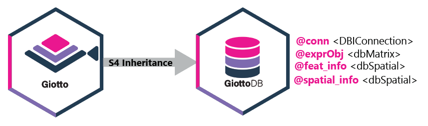

Overview
Overview.RmdOverview
GiottoDB is a module in the Giotto
Suite ecosystem that provides database support for core
Giotto functionality through dbverse.

GiottoDB extends Giotto objects with
database-backed slots and a persistent database connection.
GiottoDB function support
The table below summarizes GiottoDB-native methods and Giotto functions that are supported for GiottoDB objects.
| Category | Function | Description |
|---|---|---|
| Object creation | GiottoDB() |
Create a database-backed GiottoDB object. |
| Object creation | as_giottodb() |
Convert a Giotto object to a GiottoDB object. |
| Object creation | as_giotto() |
Convert a GiottoDB object back to an in-memory Giotto object. |
| Saving and loading | saveGiotto() |
Save a GiottoDB object with its database-backed data. |
| Saving and loading | loadGiotto() |
Load a saved GiottoDB object. |
| Saving and loading | loadGiottoDB() |
Load a GiottoDB object from a saved GiottoDB project. |
| Connection management | dbReconnect() |
Reconnect stale database-backed slots after loading. |
| Configuration | GiottoDB-options |
Review global options used by GiottoDB-backed workflows. |
| Expression objects | createExprObj() |
Create Giotto expression objects that can contain database-backed matrices. |
| Expression access | getExpression() |
Retrieve expression objects or matrices from GiottoDB objects. |
| Expression processing | filterGiotto() |
Filter cells and features while preserving database-backed expression data. |
| Expression processing | processExpression() |
Run supported expression-processing workflows on dbMatrix-backed expression data. |
| Expression processing | processData() |
Run dbMatrix-backed expression processing methods used by Giotto workflows. |
| Expression processing | normalizeGiotto() |
Normalize database-backed expression matrices. |
| Expression processing | addStatistics() |
Add cell and feature statistics from database-backed matrices. |
| Expression processing | calculateHVF() |
Identify highly variable features from database-backed matrices. |
| Dimension reduction | runPCA() |
Run PCA using database-backed matrix operations. |
| Dimension reduction | runUMAP() |
Run UMAP from supported reduced dimensions. |
| Clustering | doLeidenCluster() |
Cluster cells from supported nearest-neighbor graphs or reduced dimensions. |
| Clustering | doLeidenClusterIgraph() |
Run Leiden clustering through Giotto’s igraph workflow. |
| Differential expression | findMarkers_one_vs_all() |
Run one-versus-all marker testing on supported GiottoDB objects. |
| Subcellular workflow | createGiottoPoints() |
Create Giotto point objects backed by dbSpatial where applicable. |
| Subcellular workflow | createGiottoPolygon() |
Create Giotto polygon objects backed by dbSpatial where applicable. |
| Subcellular workflow | calculateOverlap() |
Compute overlaps between spatial features. |
| Subcellular workflow | overlapToMatrix() |
Convert spatial overlaps to matrix-like outputs. |
| Subcellular workflow | tessellate() |
Generate square or hexagonal tessellations. |
| Visualization | spatPlot2D() |
Create standard Giotto spatial plots for supported GiottoDB objects. |
| Visualization | spatInSituPlotPoints() |
Visualize in situ point features from GiottoDB objects. |
| Visualization | plotPCA() |
Plot PCA embeddings from GiottoDB objects. |
| Visualization | plotUMAP() |
Plot UMAP embeddings from GiottoDB objects. |
Performance
Benchmark summaries are available in the benchmarks vignette.